The corrected current installed package blocks changed and missing required evidence in common and saved tailored views, contains incompatible saved bindings and presents exact historical evidence in common fallback without replay. Current wheel, controlled synthetic fixture, no engineering or external action.
pass
Exact original evidence enables Approve. Earlier saved-preview and two-view changed-evidence proofs are retained; no preview, producer or authoring is repeated.
Expected: Same exact saved review available; no execution or decision
Actual: Exact original evidence enables Approve. Earlier saved-preview and two-view changed-evidence proofs are retained; no preview, producer or authoring is repeated.
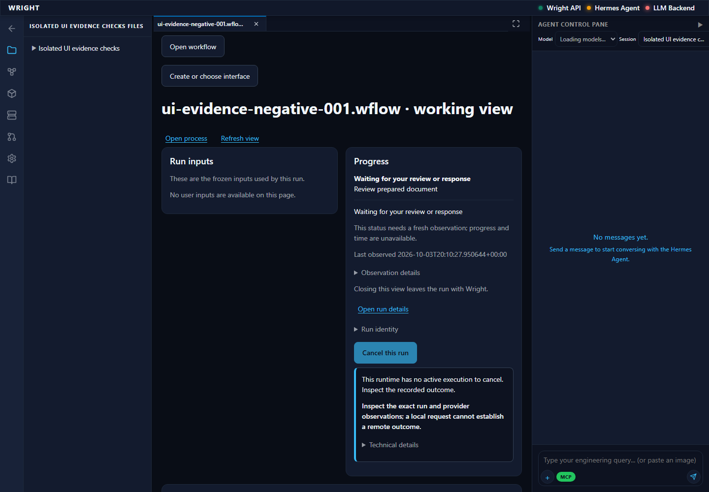
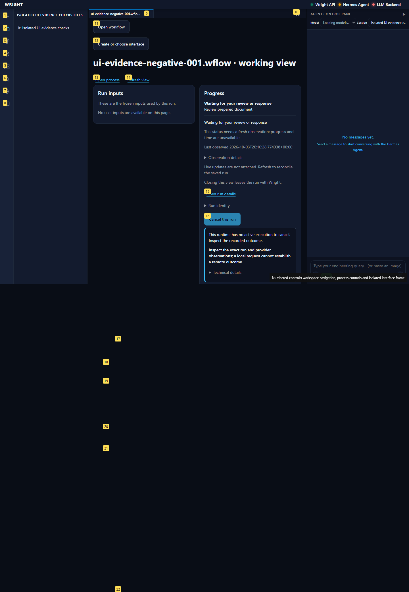
Exact original evidence enables Approve. Earlier saved-preview and two-view changed-evidence proofs are retained; no preview, producer or authoring is repeated.
Expected: Same exact saved review available; no execution or decision
Actual: Exact original evidence enables Approve. Earlier saved-preview and two-view changed-evidence proofs are retained; no preview, producer or authoring is repeated.
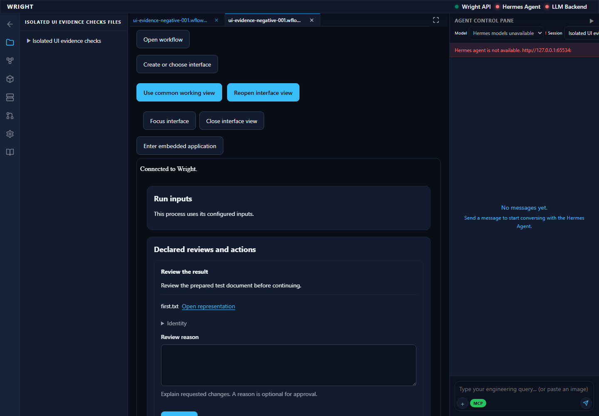
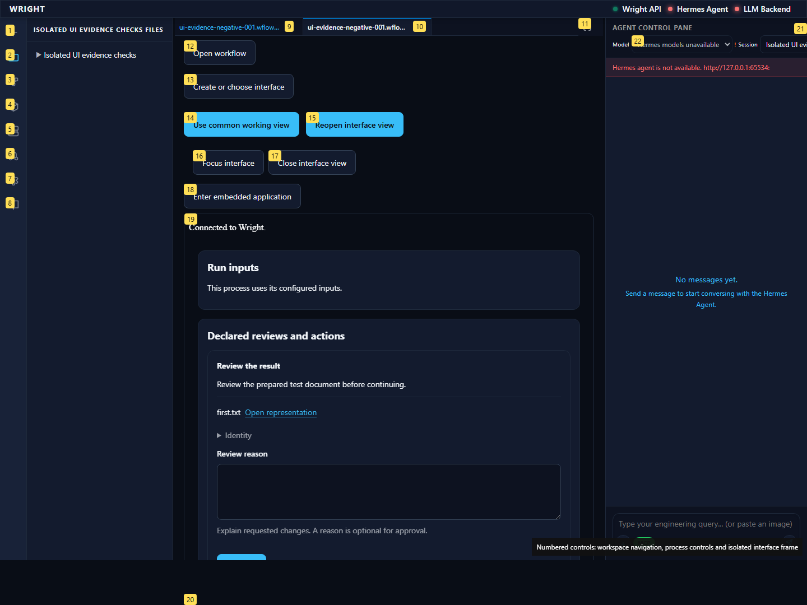
The actual changed file disables Approve with the same actionable reason.
Expected: Changed actual evidence blocks exact review in both views
Actual: The actual changed file disables Approve with the same actionable reason.
The actual changed file disables Approve with the same actionable reason.
Expected: Changed actual evidence blocks exact review in both views
Actual: The actual changed file disables Approve with the same actionable reason.
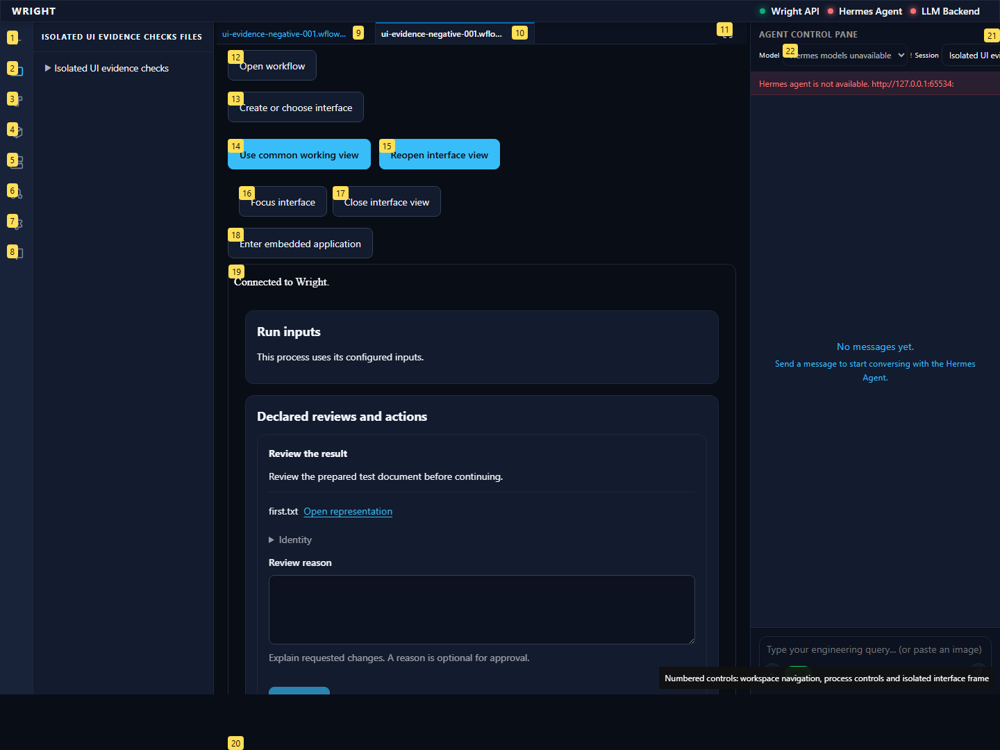
Missing actual file cannot authorize Approve in this view.
Expected: Missing required evidence blocks review with reason
Actual: Missing actual file cannot authorize Approve in this view.
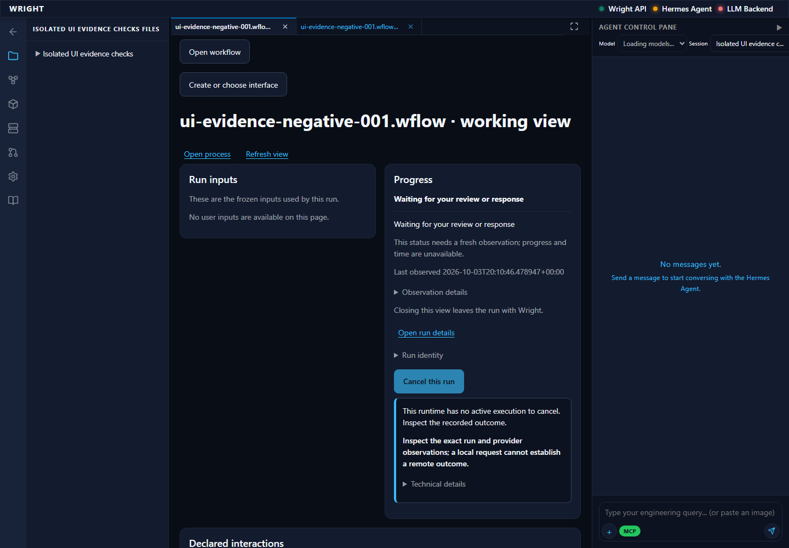
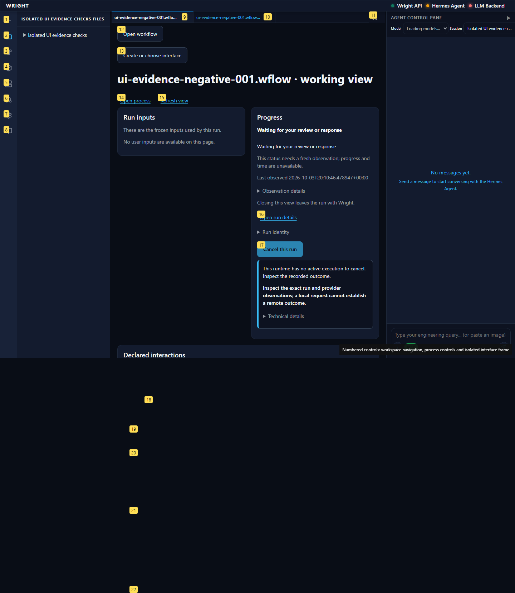
Missing actual file cannot authorize Approve in this view.
Expected: Missing required evidence blocks review with reason
Actual: Missing actual file cannot authorize Approve in this view.
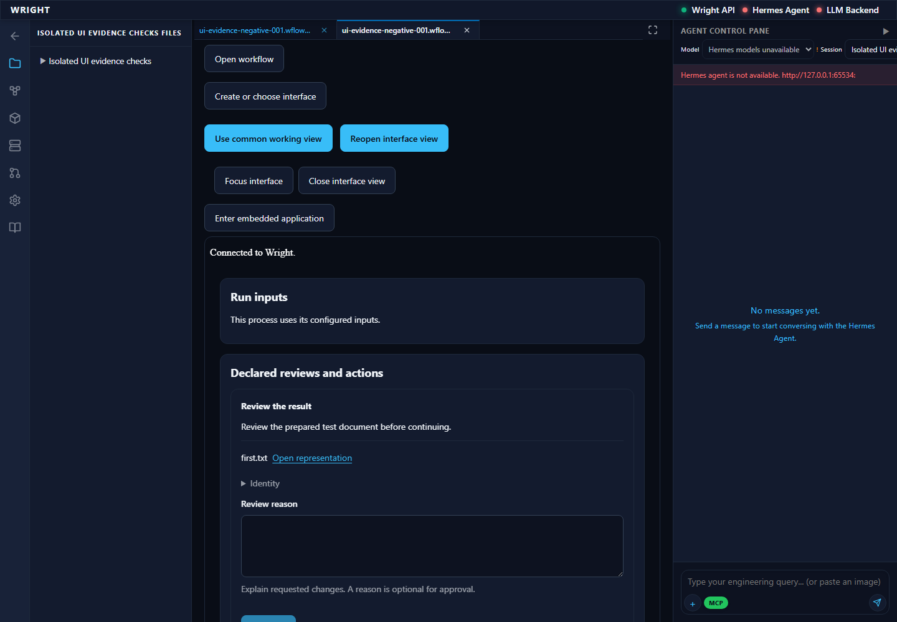
Changed accepted output binding prevents launching the saved interface and offers the common view.
Expected: No generated frame/action authority; common fallback offered
Actual: Changed accepted output binding prevents launching the saved interface and offers the common view.
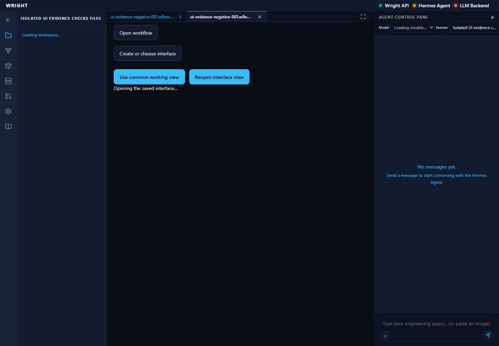
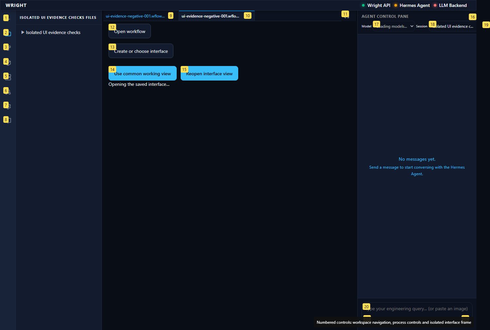
Common fallback opens the exact historical run while review stays unavailable for changed source.
Expected: Historical run inspectable without new permission
Actual: Common fallback opens the exact historical run while review stays unavailable for changed source.
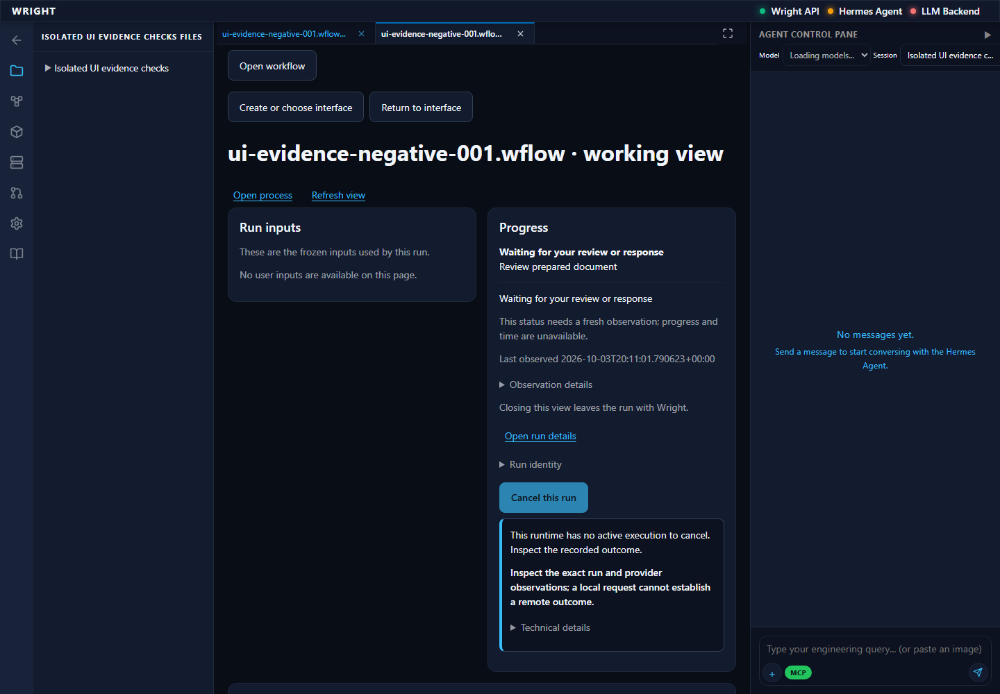
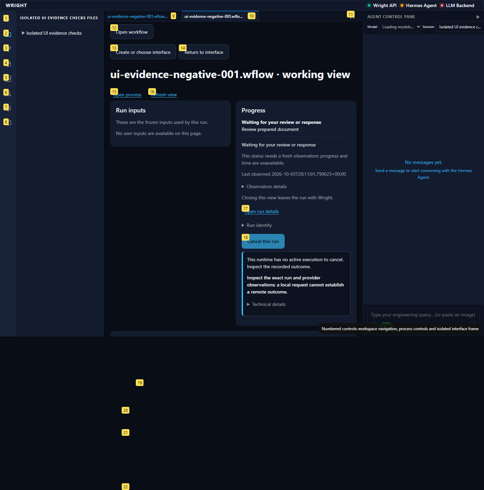